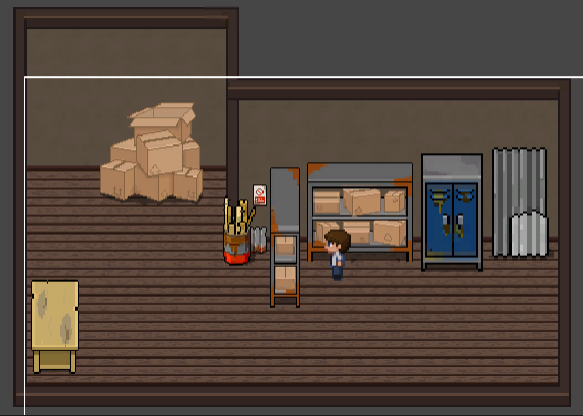
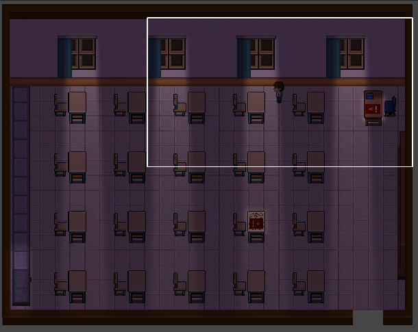

echoes of Melody

Project ini adalah project untuk tugas sekolah MP yaitu membuat game sederhana. serta game ini berlatar di SMKN 4 Bandung sehingga bangunan yang ada di dalam game adalah bangunan SMKN 4 Bandung.
Project ini adalah project untuk tugas sekolah MP yaitu membuat game sederhana. serta game ini berlatar di SMKN 4 Bandung sehingga bangunan yang ada di dalam game adalah bangunan SMKN 4 Bandung.


Echoes of Melody adalah sebuah game pixel art 2D yang dibuat
dengan menggunakan UNITY. Game ini memiliki tujuan menemukan teman yang hilang
dengan fokus utama mencari tahu kebenaran atau backstory yang terdapat pada puzzle yang
ada di dalam game.
Game masih dalam tahap pengembangan, sehingga belum dapat dibuka gameplaynya.